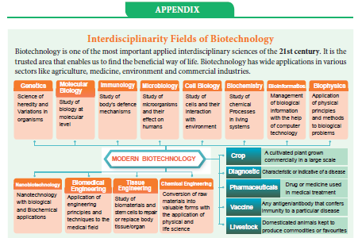
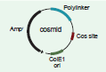
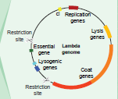
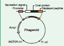
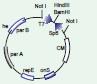
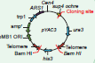
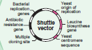
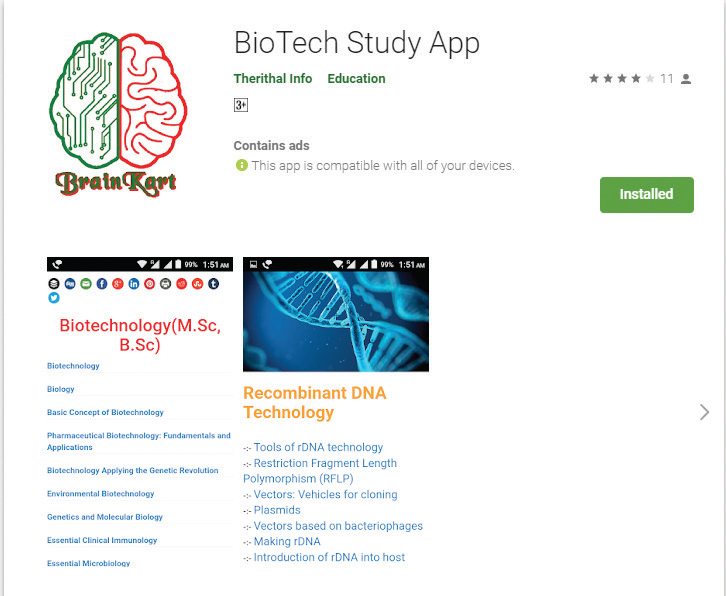
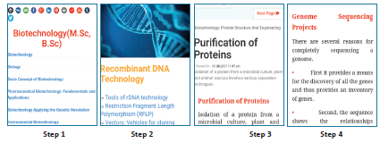

9.Match the following :
Column A |
Column B |
1 Exonuclease |
a. add or remove phosphate |
2 Endonuclease |
b. binding the DNA fragments |
3 Alkaline Phosphatase |
c. cut the DNA at terminus |
4 Ligase |
d. cut the DNA at middle |
1 2 3 4
A CLOSE BRACKET a b c d
B CLOSE BRACKET c d b a
C CLOSE BRACKET a c b d
D CLOSE BRACKET c d a b
10. In which techniques Ethidium Bromide is used QUESTION MARK
a. Southern Blotting techniques
b. Western Blotting techniques
c. Polymerase Chain Reaction
d. Agrose Gel Electroporosis
11. Assertion : Agrobacterium tumifaciens is popular in genetic engineering because this bacteriumis associated with the root nodules of all cereals and pulse crops
Reason : A gene incorporated in the bacterial chromosomal genome gets atomatically transferred
to the cross with which bacterium is associated.
a CLOSE BRACKET Both assertion and reason are true. But reason is correct explanation of assertion.
b CLOSE BRACKET Both assertion and reason are true. But reason is not correct explanation of assertion.
c CLOSE BRACKET Assertion is true, but reason is false.
d CLOSE BRACKET Assertion is false, but reason is true.
e CLOSE BRACKET Both assertion and reason are false.
12. Which one of the following is not correct statement.
a CLOSE BRACKET Ti plasmid causes the bunchy top disease
b CLOSE BRACKET Multiple cloning site is known as Polylinker
c CLOSE BRACKET Non viral method transfection of Nucleic acid in cell
d CLOSE BRACKET Polylactic acid is a kind of biodegradable and bioactive thermoplastic.
13. An analysis of chromosomal DNA using the southern hybridisation technique does not use
a CLOSE BRACKET Electrophoresis
b CLOSE BRACKET Blotting
c CLOSE BRACKET Autoradiography
d CLOSE BRACKET Polymerase Chain Reaction
14. An antibiotic gene in a vector usually helpsin the selection of
a CLOSE BRACKET Competent cells
b CLOSE BRACKET Transformed cells
c CLOSE BRACKET Recombinant cells
d CLOSE BRACKET None of the above
15. Some of the characteristics of Bt cotton are
a CLOSE BRACKET Long fibre and resistant to aphids
b CLOSE BRACKET Medium yield, long fibre and resistant to beetle pests
c CLOSE BRACKET high yield and production of toxic protein crystals which kill dipteran pests.
d CLOSE BRACKET High yield and resistant to ball worms
16. How do you use the biotechnology in modern practice QUESTION MARK
17. What are the materials used to grow microorganism like Spirulina QUESTION MARK
18. You are working in a biotechnology lab with a becterium namely E.coli. How will you cut the nucleotide sequence QUESTION MARK explain it.
19. What are the enzymes you can used to cut terminal end and internal phosph di ester bond of nucleotide sequence QUESTION MARK
20. Name the chemicals used in gene transfer.
21. What do you know about the word pBR332 QUESTION MARK
22. Mention the application of Biotechnology.
23. What are restriction enzyme. Mention their type with role in Biotechnology.
24. Is their any possibilities to transfer a suitable desirable gene to host plant without vector QUESTION MARK Justify your answer.
25. How will you identify a vectors QUESTION MARK
26. Compare the various types of Blotting techniques.
27. Write the advantages of herbicide tolerant crops.
28. Write the advantages and disadvantages of Bt cotton.
29. What is bioremediation QUESTION MARK give some examples of bioremediation.
30. Write the benefits and risk of Genetically Modified Foods.
3’ Hydroxy end:
The hydroxyl group attached to 3’ carbon atom of sugar of the terminal nucleotide of a
nucleic acid.
Bacterial artificial chromosomes OPEN BRACKET BAC CLOSE BRACKET:
A cloning vector for isolation of genomic DNA constructed on the basis of F-factor.
Chimeric DNA:
A recombinant DNA molecule containing unrelated genes.
Cleave:
To break phosphodiester bonds of dsDNA, usually with a restriction enzyme.
Cloning site:
A location on a cloning vector into which DNA can be inserted.
Cloning:
Incorporation of a DNA molecule into a chromosomal site or a cloning vector.
Cloning Vector:
A small, self-replicating DNA inserted in a cloning gene.
COS sites:
The 12-base, single strand, complementary extension of phage lambda OPEN BRACKET l CLOSE BRACKET DNA.
DNA Polymerase:
An enzyme that catalyses the phosphodiester bond in the formation of DNA.
Endonucleases:
An enzyme that catalyses the cleavage of DNA at internal position, cutting
DNA at specific sites.
Genome:
The entire complement of genetic material of an organism.
Insert DNA:
A DNA molecule incorporated into a cloning vector.
Ligase:
An enzyme used in genetic engineering experiment to join the cut
ends of dsDNA.
M-13:
AssDNA bacteriophage used as vector for DNA sequencing.
Phagemid:
A cloning vector that contains components derived from both phage DNA and plasmid.
Plasmid:
Extrachromosomal, self-replicating, circular dsDNA containing some non-essential genes.
Restriction map:
A linear array of sites on DNA cleaved by various restriction enzymes.
Shuttle Vector:
A plasmid cloning vector that can replicate in two different organisms due to the presence of two different origin of replication Ori EUK and OriE. coli
Taq polymerase:
A heat stable DNA polymerase isolated from a thermophilic bacterium
Thermus aquaticus.
Vectors:
Vehicles for transferring DNA from one cell to another.
Biofuel:
Fuels like hydrogen, ethanol and methanol produced from a biological source by the action of microorganisms.
Bioleaching:
Process of using microorganisms to recover metals from their ores or contaminant
environment
Bioremediation:
Process of using organisms to remove or reduce pollutants from the environment.
Green Technology:
Pollution-free technology in which pollution is controlled at source.
Phytoremediation:
Use of certain plants to remove contaminants or pollutants from the environment
OPEN BRACKET soil, water or air CLOSE BRACKET.
Recombinant:
Cell SLASH Organism formed by a recombination of genes.
Transformation:
Process of transferring a foreign DNA into a cell and changing its genome.
Vector:
Agent used in recombinant DNA technique to carry new genes into foreign cells.
Wild Type:
Natural form of organisms.

Interdisciplinarity Fields of Biotechnology
The major historical events for the development of Biotechnology, as an interdisciplinary
field with multidisciplinary applications are listed below:
6000 BC to 3000 BC – Bread making, fermentation of fruit juices and plant exudates to produce alcoholic beverages using yeast.
1770 – Antoine Lavoisier gave chemical basis of alcoholic fermentation.
1798 – Edward Jenner uses first viral vaccine to inoculate a child from smallpox.
1838 – Protein discovered, named and recorded by Gerardus Johannes Mulder and Jons Jacob Berzelius.
1871 – Ernst Hoppe, Seyler discovered enzyme invertase, which is still used for making artificial sweeteners.
1876 – Louis Pasteur identified role of microorganisms in fermentation.
1919 – The term biotechnology was coined by Karl Ereky
1928 – Discovery of Penicillin by Alexander Fleming
1941 – Experiment with Neurospora crassa resulting in one gene one enzyme hypothesis by George Beadle and Edward Tatum.
1944 – Identification of DNA as the genetic material Avery–MacLeod–McCarty
1953 – Discovery of double helix structure of DNA by James Watson and Francis Crick.
1972 – Discovery of Restriction enzymes by Arber, Smith and Nathans.
1973 – Fragmentation of DNA-combined with Plasmid DNA, r-DNA technology - Genetic engineering -Modified gene by Stanley Cohen, Annie Chang, Robert Helling and Herbert Boyer.
1975 – Production of Monoclonal antibodies by Kohler and Milstein
1976 – Sanger and Gilbert developed techniques to sequence DNA
1978 – Production of human insulin in E.Coli
1979 – Development of Artificial gene – functioning within the living cells by H.G. Khorana
1982 – U.S approved humulin OPEN BRACKET human insulin CLOSE BRACKET the first pharmaceutical product of rDNA technology,
for human use.
1983 – Use of Ti plasmids to genetically transform plants
1986 – Development of Polymerase Chain Reaction OPEN BRACKET PCR CLOSE BRACKET technology by Kary Mullis.
1987 – Gene transfer by biolistic transformation
1992 – First chromosomes of yeast is sequenced
1994 – U.S approved the first Genetically Modified food: Flavr Savr tomato.
1997 – The first transgenic animal, mammalian sheep, Dolly developed
by nuclear cloning by Ian Wilmet.
2000 – First plant Genome of Arabidopsis thaliana sequenced
2001 – Human genome Project creates a draft of the human genome sequence.
2002 – First crop plant genome sequenced in Oryza sativa
2003 – Human genome project is completed, providing information on the locations and sequence of human genes on all 46 chromosomes.
2010 – Sir Robert G. Edwards developed in vitro fertilization in animal.
2016 – Stem cells injected into stroke patients reenable patient to walk – Stem cell therapy
2017 – Blood stem cells grown in lab.
2018 – James Allison and TasukuHonjo discovered protein found in immune cells.
This found a new role in cancer therapy.
Cosmid

Cosmids are plasmids containing the ‘cos’ – Cohesive Terminus, the sequence having cohesive ends. They are hybrid vectors derived from plasmids having a fragment of lambda phage DNA with its Cos site and a bacterial plasmid

Bacteriophages are viruses that infect bacteria. The most commonly used E. coli phages are l phage OPEN BRACKET Lambda phage CLOSE BRACKET and M13 phage. Phage vectors are more efficient than plasmids - DNA upto 25 Kb can be inserted into phage vector.
Lambda genome: Lambda phage is a temperate bacteriophage that infects Escherichia coli. The genome of lambda-Phage is 48502 bp long, that is 49 K b and has 50 genes.

Phagemids are reconstructed plasmid vectors, which contain their own origin - ‘ori’ gene and also contain origin of replication from a phage. pBluescript SK OPEN BRACKET plus SLASH– CLOSE BRACKET is an example of phagemid vector.

BAC is a shuttle plasmid vector, created for cloning large-sized foreign DNA. BAC vector is one of the most useful cloning vector in r-DNA technology they can clone DNA inserts of upto 300 Kb and they are stable and more user-friendly.

YAC plasmid vector behaves like a yeast chromosome, which occurs in two forms, i.e. circular and linear. The circular YAC multiplies in Bacteria and linear YAC multiplies in Yeast Cells.

The shuttle vectors are plasmids designed to replicate in cells of two different species. These vectors are created by recombinant techniques. The shuttle vectors can propagate in one host and then move into another host without any extra manipulation. Most of the Eukaryotic vectors are Shuttle Vectors.
Principles and Processes of Biotechnology

BIO TECH STUDY APP
Let us know about the information Bio Technology through this activity
Steps
Type the URL or scan the QR code to open the activity page.
Click on the topic to know in detail.
To know the sub topics in detail, click on the dots in top right corner.

URL:
https:SLASHSLASHplay.google.comSLASHstoreSLASHappsSLASHdetails QUESTION MARKid=info.therithal.brainkart. biotechstudyapp
biotechstudyapp